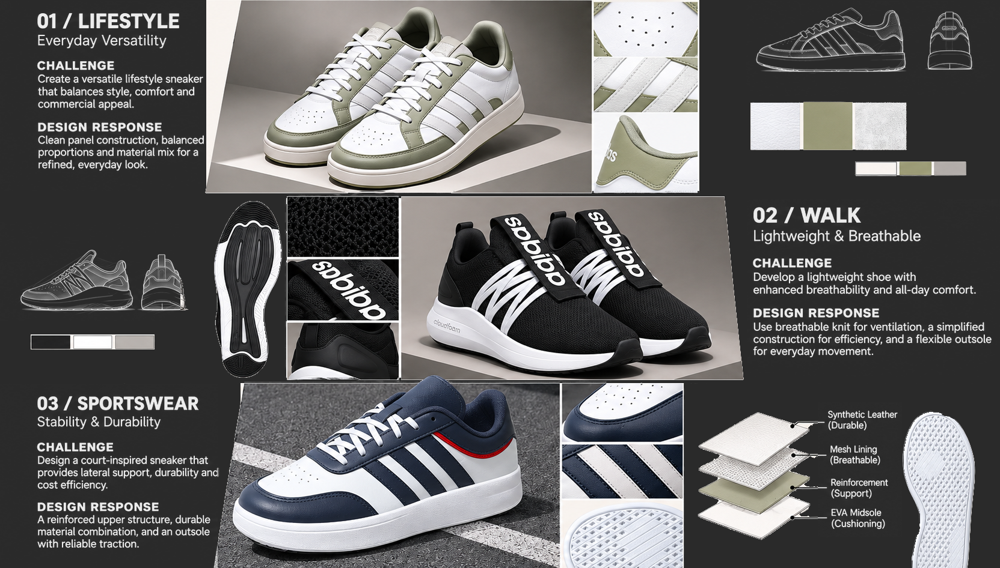

Sportswear /
Lifestyle
A curated range of commercial and lifestyle footwear projects.
Commercial footwear across multiple lifestyle directions
This selected range covers sportswear and lifestyle footwear across several separate projects, including silhouette development, colour and material exploration, product variation and technical development.
The models shown are individual projects rather than one collection.
Different products,
different problems

Different product briefs require different visual languages, proportions and levels of technical complexity.
Colour and material
per product
Each model carries its own colour and material direction. Material choice has to support appearance, cost and manufacturing at the same time, so colour and material are resolved together rather than applied afterwards.
- {{ m }}
Material codes and supplier detail are not published.
Designing for different
product identities
Silhouette, proportion, material and colour are adjusted to suit each product direction rather than carried across from one model to the next.
Physical product
execution
Selected development imagery showing physical product execution during the development process.
Design intent into
product information
Technical development supported the translation of design intent into clearer product and construction information.
- {{ d }}
Available on request
A varied sportswear and lifestyle range across several separate product directions.
The work spans footwear design, colour and material, product variation and technical development, adapted to each product rather than applied as one house style.
Commercial release
Selected work from this project was commercially released and listed through brand and/or retail channels.
Have a project
in mind?
From initial concept to technical development, sampling and production support.